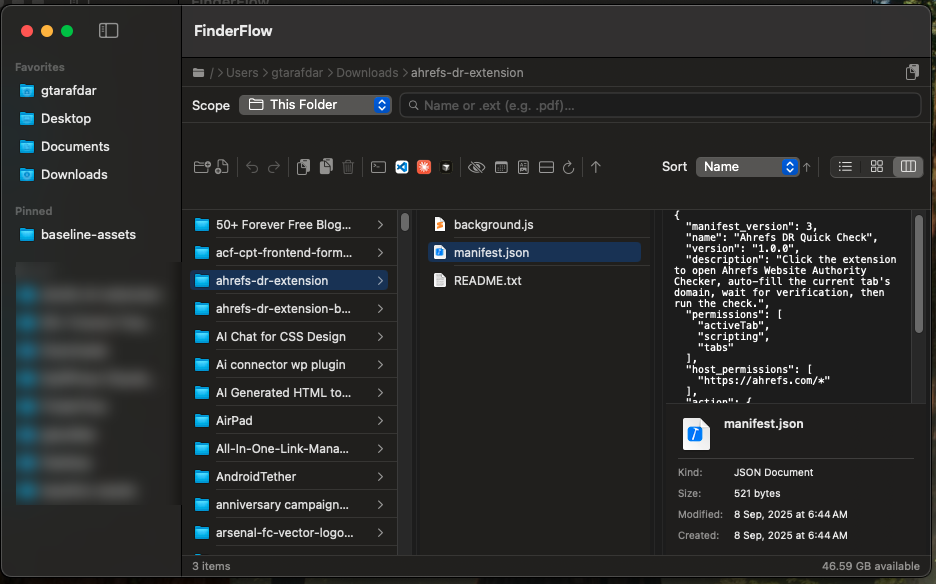
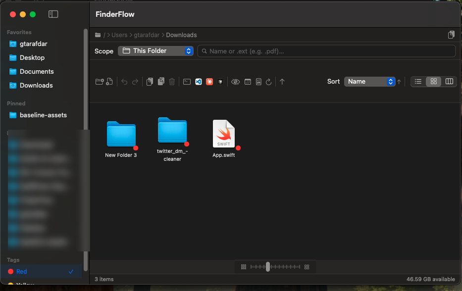
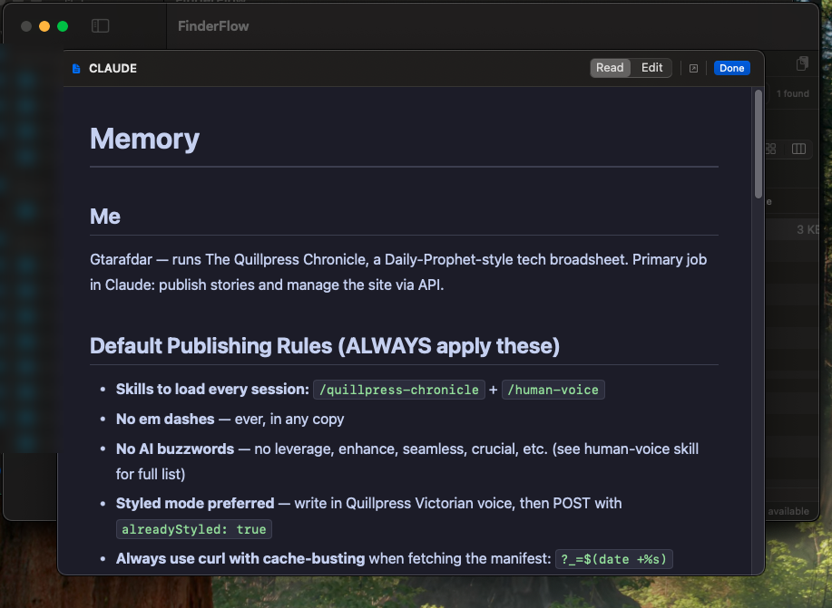
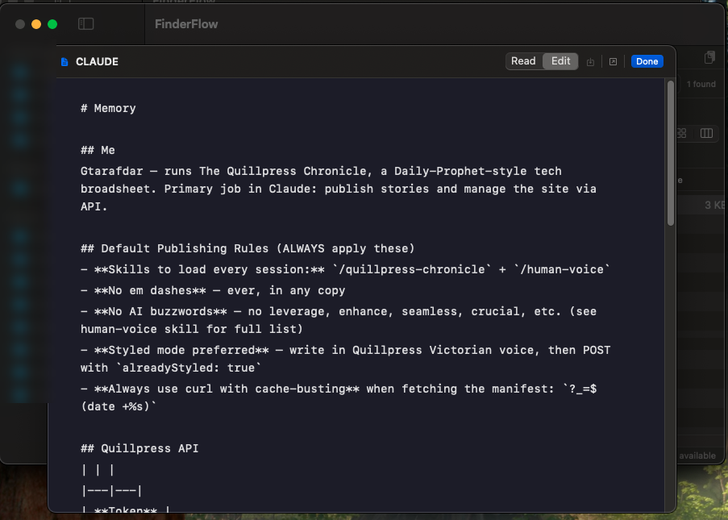

Three real views
Column (miller) with a live preview pane, sortable List, and a resizable Icon grid — all sharing the same sort & group options.
macOS file manager · runs fully on your Mac
A fast, native file browser with a built-in code editor, a Markdown reader, real Finder color tags, Spotlight search, and one-click IDE launch — the whole stack you usually open four apps for, in one window.
Apple Silicon · macOS 14+ · 27 MB .dmg · Free & open source · MIT

See it in action
Click through the views — the same window, however you like to work.
Sortable columns (name, dates, size, kind), optional date grouping, inline rename, and tag dots — exactly where you expect them.

Finder-style miller columns with a live preview pane and a Get Info panel — drill through deep folder trees without losing context.

Resizable icon grid, and real color tags: tap Red in the sidebar and aiFlow filters Mac-wide via Spotlight — the same tags show in Finder too.

Open code in a real editor — tabs, syntax highlighting, command palette (⌘⇧P), and a Sublime-style minimap, in its own resizable window.

Read Markdown beautifully rendered — or switch to Edit and save with ⌘S. No Obsidian needed for your AI / README / notes files.
Why switch
The reasons people move from Finder — none of these ship in macOS Finder.
Built-in editor
Open any text or code file straight from the browser into a real, standalone, resizable window — it never blocks your file navigation.
Markdown, built in
AI hands you Markdown all day. Read it rendered, or flip to edit and save with ⌘S — without ever leaving your files.

Everything in the box
Column (miller) with a live preview pane, sortable List, and a resizable Icon grid — all sharing the same sort & group options.
The 7 standard colors, multiple per file, written in macOS's real format — they show up in Finder too.
exclusiveDrag a file or multi-selection out of aiFlow onto the Desktop, another folder, an upload dialog, a browser, Slack, Mail — real file drag just like Finder.
new in 1.2Group by Date (Today → Previous 90 Days → Earlier), Kind, Extension, Size or Name. Folders-first / files-first / mixed — works in every view.
new in 1.2This folder, recursive, or your entire Mac. Extension search (.pdf) included.
Quick Look + a preview pane for images, PDFs, code, video, audio, docs.
Every move, rename, paste and trash is reversible — partial-failure-safe.
Open the folder in Terminal, VS Code, Cursor, Claude Code or Codex — only what you have shows.
exclusiveA dedicated copy-path button with a confirmation toast — no menu digging.
Compress to zip; extract zip / tar / gz / tgz / bz2 / xz with built-in tools.
Share/AirDrop, Get Info, Show in Finder, make alias — the native actions you rely on.
A bundled extension adds New Folder Here, Copy Path, Open in Terminal & Open in aiFlow right into Finder.
exclusiveRoute folder opens to aiFlow via LaunchServices. Pinned & recent folders, path bar, disk-space status, launch at login.
Trust
It handles your files, so it's built — and reviewed — to deserve that.
Get it running
| macOS | 14.0 Sonoma or later |
|---|---|
| Chip | Apple Silicon (M1 or newer) |
| Download | ≈ 27 MB · .dmg |
| Extras | None — fully self-contained |
| Price | Free & open source (MIT) |
On first browse, macOS shows standard “allow access” prompts — normal for any file manager. Just click Allow.
Install once. Browse, tag, search, edit, and launch your IDE — all in one window.
Apple Silicon · macOS 14+ · ad-hoc signed · 27 MB